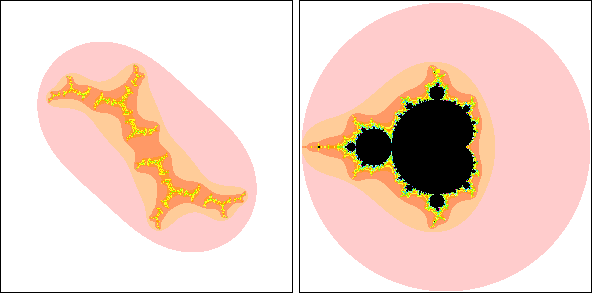

| Next, for the natural interpretation of the Mandelbrot set, recall the
theorem of Fatou and Julia, that Julia sets Jcare either connected or Cantor sets. |
| Moreover, they showed Jc is connected if and only if the iterates of
z0 = 0 does not run away to infinity. |
| (Specifically, Julia and Fatou showed
the iterates of the critical point of the function iterated, z2 + c in this case,
determine whether the Julia set is connected.) |
| Because the Mandelbrot set consists of those
c for which the iterates of z0 = 0 do not run away to infinity, we see the
Mandelbrot set is exactly those c for which Jc is connected. |
| Consequently, the
Mandelbrot set is a very natural object to study. |
| To emphasize the relation between the Mandelbrot set and the Julia sets,
this movie traces a path of points in the Mandelbrot set (right
panel) and shows the corresponding Julia set in the left panel. |
| Note that when the points
go outside the Mandelbrot set, the Julia set disintegrates into a dust of points. |
|  |
| Click the picture to stop. |
|
| Here are three more applets from Bob Devaney's dynamical systems website at BU. |
| With the Julia set computer we can choose
a point on the Mandelbrot set and view the corresponding Julia set and its magnifications. |
| With the Mandelbrot/Julia set applet
we can view the Mandelbrot set, a Julia set, and any orbit in or near the Julia set. |
| With the Mandelbrot movie maker we
can define a path in and around the Mandelbrot set and animate the corresponding Julia sets
as we move along the path. |